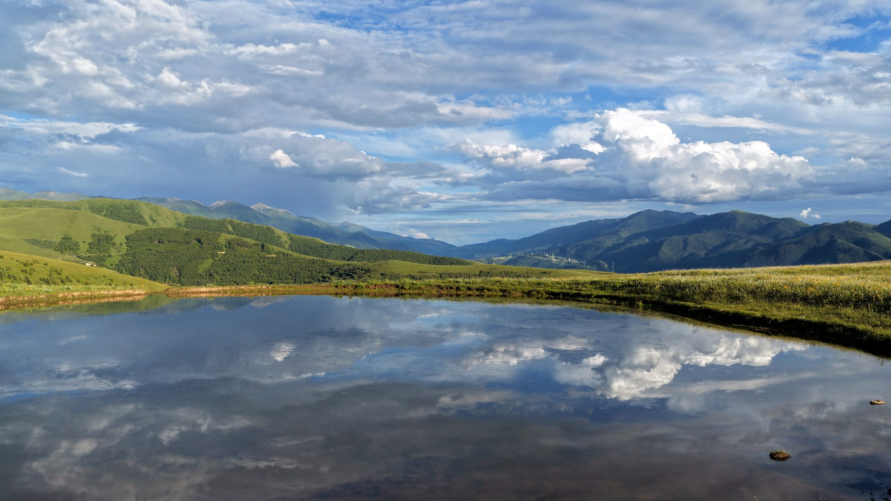
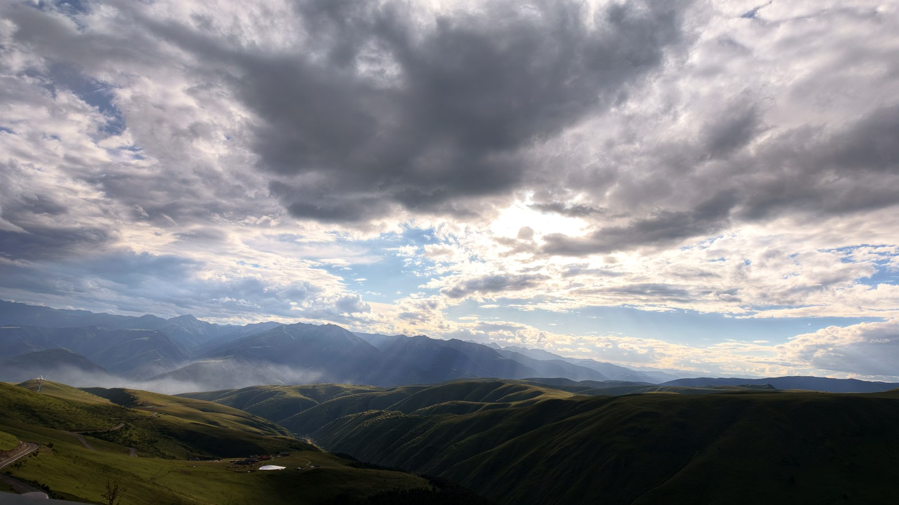

MOUNTAINS · LAKES · LIGHT
山野拾光
攀上山岭，看更远的景；走进旷野，吹自然的风。
影 集
航拍视角下的山野、湖泊、石林与村落，全是风景，没有打扰。方向键翻页，空格自动播放，F 全屏；下方作品墙点击任意一张进入大图浏览。


← → 翻页 · 空格 自动播放 · F 全屏 · 点击缩略图或下方作品墙直达
全部作品
ALL WORKS · 点击进入大图浏览
影 像
一段多地航拍混剪长片打头，加六段川滇自驾速览，每段两分钟。点击封面即可在页面内播放，支持拖动进度。
关 于
一起出发
想交流路线、装备或约拍，欢迎来聊聊